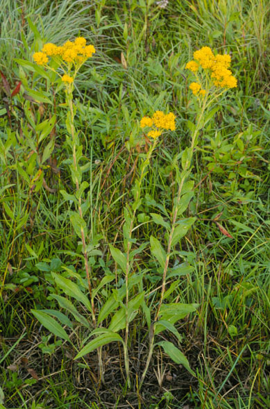
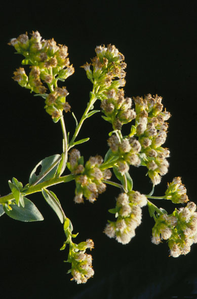
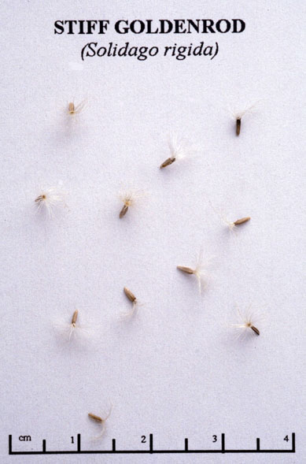

Solidago Ridiga
Family: Asteraceae
Stiff Goldenrod
Swink/Wilhelm #4


Click to view larger photo
FLOWERING: Late September through October
SEED TIMING: October
HABITAT: Dry to mesic prairie
DIAGNOSTIC FEATURES: 1 - 5 feet. Erect, hairy stem, (branching only at the top) with small, rigid, oval, clasping leaves. Basal leaves are large, toothed, rough and long-stemmed. The golden-colored flowers are arranged in flat-topped or dome-shaped clusters.
TO PICK: Seed is similar to all goldenrods in forming a fluffy pappus. Once the pappus begins to fluff the entire head may be taken. Spread heads out to dry on newspapers, then store in paper bags in a cool, dry place until time to process.